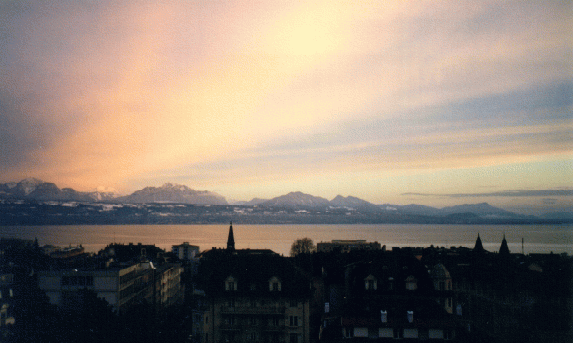

| "In judging of that tempestuous wind called Euroclydon,
says an old writer - of whose works I possess the only copy extant - it
maketh a marvellous difference, whether thou lookest out at it from a glass
window where the frost is all on the outside, or whether thou observest
it from that sashless window, where the frost is on both sides..."
Melville, Moby Dick, Chap. II
|
Indietro tutta!
Back to my Home Page